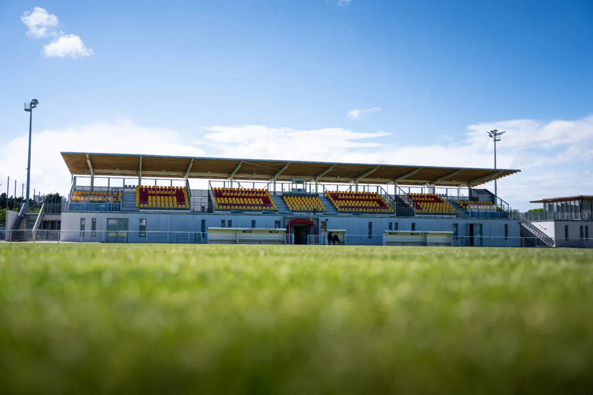

Formation
Reconnue dans toute la région, l’académie de l’AS Saint-Priest accompagne les jeunes joueurs vers le haut niveau avec un encadrement structuré et ambitieux.
Club historique du football lyonnais, l’AS Saint-Priest forme, accompagne et fait vibrer ses supporters autour d’un projet sportif ambitieux. Découvrez l’actualité du club, les équipes et les prochains rendez-vous au stade Jean Joly.

Découvrez l’AS Saint-Priest, son histoire, ses équipes et son projet sportif.
Reconnue dans toute la région, l’académie de l’AS Saint-Priest accompagne les jeunes joueurs vers le haut niveau avec un encadrement structuré et ambitieux.
De l’équipe première en National 2 aux catégories jeunes et féminines, retrouvez l’ensemble des équipes du club, leurs effectifs et leurs résultats.
Le club s’appuie sur un réseau de partenaires locaux et régionaux engagés dans le développement du projet sportif et associatif.

L’AS Saint-Priest se déplace sur la pelouse d’Istres ce samedi à 18h.

A l’occasion du match de U19 National opposant nos Sang & Or à l’OL ce dimanche à 15h, nous vous informons que l’accès au Stade Jacques Joly se fera uniquement à l’adresse suivante: 𝟏𝟑 𝐀𝐯𝐞𝐧𝐮𝐞 𝐉𝐞𝐚𝐧 𝐉𝐚𝐮𝐫𝐞̀𝐬 📍

Le haut de survêtement de l’ASSP est actuellement en promotion à 25€ pour toutes les tailles !
•Taille adulte (XS – S – M – L): 40€ ➡️ 𝟐𝟓€ / Disponible ici
•Taille enfant (7/8 – 9/10 – 11/12 – 13/14): 35€ ➡️ 𝟐𝟓€ / Disponible ici
Venez soutenir l’AS Saint-Priest au stade Jean Joly pour le prochain match de National 2. Réservez vos places dès maintenant et vivez l’ambiance du football en direct.